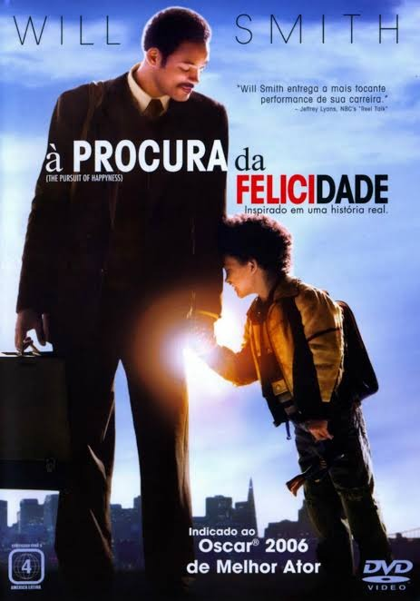

- Título original
- The Pursuit of Happyness
- Direção
- Gabriele Muccino
- Roteiro
- Steven Conrad
- Gênero
- Drama, biografia
- País
- Estados Unidos
- Duração
- 117 minutos

Drama · 2006 · 117 min
Em Busca da Felicidade
The Pursuit of Happyness
A história real de um pai que, mesmo sem casa e sem dinheiro, não desistiu do sonho de dar um futuro ao filho.
Conhecer a históriaSinopse
São Francisco, 1981. Chris Gardner (Will Smith) é um vendedor de aparelhos de densitometria óssea que luta para pagar as contas. Quando a esposa o abandona, ele fica sozinho com o filho de cinco anos, Christopher, e perde o apartamento.
Decidido a mudar de vida, Chris consegue um estágio não remunerado em uma corretora de ações. Só um entre vinte estagiários será contratado. Enquanto estuda e disputa a vaga, ele e o filho dormem em abrigos, em estações de metrô e até em banheiros públicos.
Baseado na autobiografia de Chris Gardner, o filme mostra como persistência e amor de pai podem transformar uma situação sem saída.
Ficha técnica
Elenco
Will Smith
Chris Gardner
O pai que não desiste. Rendeu a Will Smith uma indicação ao Oscar de Melhor Ator.
Jaden Smith
Christopher
O filho de Chris, e também filho de Will Smith na vida real. Estreou no cinema neste filme.
Thandiwe Newton
Linda
A esposa de Chris, que não aguenta a pressão financeira e deixa a família.
Brian Howe
Jay Twistle
Gerente da corretora e responsável por avaliar os estagiários.
Curiosidades
O erro no título
"Happyness" está escrito errado de propósito. O título vem de uma placa de creche que Chris Gardner via todos os dias com o filho.
História verdadeira
Chris Gardner de fato foi sem-teto, conseguiu o estágio e depois abriu a própria corretora de investimentos.
Participação especial
O verdadeiro Chris Gardner aparece rapidamente no filme, cruzando a rua perto do final.